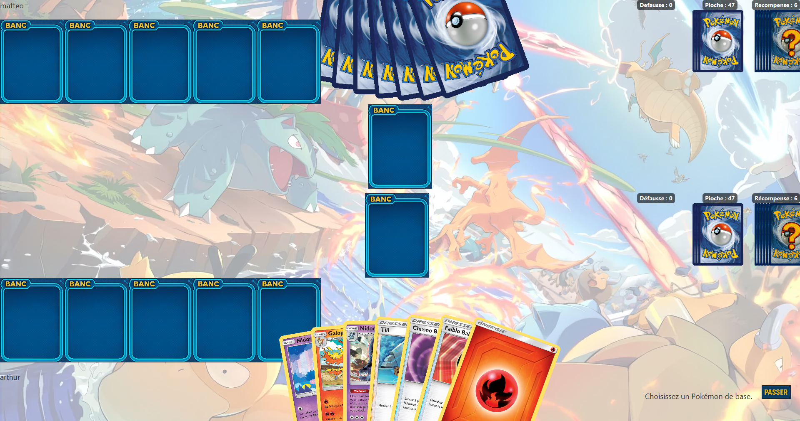

Application desktop de gestion de collection de cartes
Retour au portfolioCette SAÉ avait pour objectif de concevoir un logiciel de bureau permettant à un binôme de pouvoir jouer au jeu de carte de Pokemon TCG selon les règles traditionnel. Le défi principal était double : appliquer rigoureusement les principes de la programmation orientée objet (héritage, encapsulation, polymorphisme) tout en produisant une interface graphique ergonomique avec JavaFX.
Durée : ~6 semaines | En binôme | Contrainte : respect strict des concepts POO, interface graphique obligatoire

Techniques
Humaines
Ce projet m'a permis de comprendre que la POO n'est pas qu'une liste de concepts à connaître pour un examen, mais un vrai outil de conception qui structure la façon de penser un problème. La phase de modélisation des classes — avant d'écrire la moindre ligne de code — s'est révélée cruciale : chaque mauvaise décision de conception s'est répercutée en cascade sur tout le reste du projet.
JavaFX m'a aussi confronté à la réalité du développement d'interface : l'UX est un métier à part entière. Faire quelque chose qui fonctionne est une chose ; faire quelque chose d'intuitif et d'agréable à utiliser en est une autre, bien plus difficile.